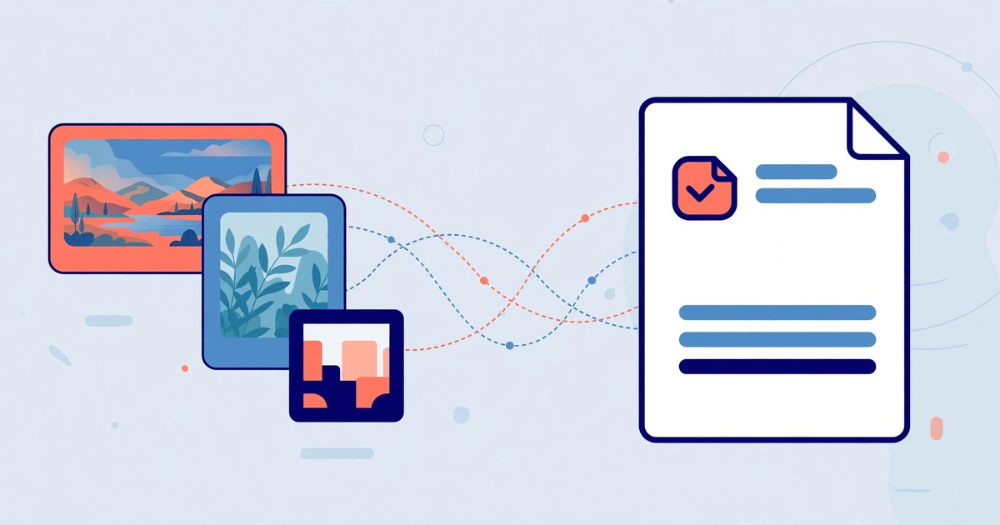

How to Convert Images to PDF Online
Turn photos, scans and screenshots into one clean PDF — free, no signup, and your images never leave your device.
November 12, 2026 · 6 min read

Convert images to PDF online in under a minute: open ToolsHub's Image to PDF tool, choose your JPG, PNG or WebP images, arrange the page order, pick a page size, and click Create PDF. The file downloads as images.pdf — no account, no signup, no watermark, and your images never leave your device.
A PDF is the simplest way to share a set of images as one document: it keeps every page in the order you chose, looks the same on any phone or computer, and prints cleanly. It suits scanned forms, receipts, screenshots for a report, or a photo set sent as a single file.
What the tool does
The Image to PDF tool turns each image you choose into one page of a PDF, in the order you set. One image or twenty — a three-photo set becomes a three-page PDF. JPG, PNG, WebP and any other format your browser can open all work.
There are three page sizes: fit to image, where each page is exactly the size of its image; A4 portrait, where the image is fitted inside a standard A4 page; and A4 landscape, the same page turned sideways. The image always keeps its proportions — scaled to fit, never stretched — and is centred on the page.
Everything runs in your browser, using the pdf-lib library. Your images are never uploaded, so there is no queue and nothing stored after you close the page. When the PDF is ready, the tool shows the page count and PDF size in KB, and the download starts automatically.
One detail worth knowing: JPG and PNG images go into the PDF as they are, but other formats — WebP, for example — are first converted to PNG inside your browser. A PNG is usually larger than the original WebP, so the finished PDF can be bigger than the images you started with.
Convert images to PDF in 5 steps
- Open the Image to PDF tool — it runs entirely in your browser, so your images are never uploaded anywhere.
- Choose your images. Select one or more — JPG, PNG, WebP and other browser-supported formats all work. They are added in the order you pick them, and each one becomes one page.
- Arrange the page order. Use ↑ and ↓ to move an image, or ✕ to remove it. Check the order now — the PDF is built in exactly this order.
- Pick a page size. Choose fit to image, A4 portrait, or A4 landscape. Fit to image keeps each page the size of its photo; the A4 options fit the image inside a standard A4 page, the right choice if you plan to print.
- Click Create PDF. The download starts automatically as images.pdf, and the result area shows the page count and PDF size, so you can confirm it before you share it.
A worked example: one photo, three page sizes
Take one landscape photo, 1200 × 800 pixels — here is exactly what each page-size option does with it.
- Fit to image: the page is the size of the photo — 1200 × 800 points. A point is 1/72 of an inch, so that page is 16.67 × 11.11 inches — far larger than A4 and a poor choice for printing.
- A4 portrait: the page is a standard A4 sheet, 595.28 × 841.89 points (210 × 297 mm). The photo is scaled by 595.28 ÷ 1200 = 0.496, so it is drawn 595.28 wide and 396.85 tall, filling the width exactly. The leftover space, (841.89 − 396.85) ÷ 2 = 222.52 points, sits as an even margin above and below — about 3.09 inches each.
- A4 landscape: the same A4 sheet turned sideways, 841.89 × 595.28 points. The photo is scaled by 841.89 ÷ 1200 = 0.702, so it is drawn 841.89 wide and 561.26 tall, again filling the width. The margins are (595.28 − 561.26) ÷ 2 = 17.01 points top and bottom — barely a quarter of an inch.
The tool scales each image by the smaller of the width ratio and the height ratio, so the whole image always fits, nothing is cropped, and the margins are simply whatever space is left. Here is how three different photos land on an A4 portrait page:
| Photo | Drawn size on A4 portrait | Margins |
|---|---|---|
| 1200 × 800 landscape | 595.28 × 396.85 pt | 222.5 pt top and bottom |
| 800 × 1200 portrait | 561.26 × 841.89 pt | 17.0 pt left and right |
| 900 × 900 square | 595.28 × 595.28 pt | 123.3 pt top and bottom |
Match landscape photos to A4 landscape and portrait photos to A4 portrait; use fit to image only when exact pixel size matters more than printing. If your set mixes both shapes, pick the orientation that matches most images, or split it into two PDFs — one portrait, one landscape.
5 mistakes that make your image-to-PDF conversion worse
- Skipping the page-order check. The PDF is built in exactly the order shown, and the only fix for a wrong order is to build it again — so check it before you click Create PDF.
- Choosing fit to image when you need to print. A 1200 × 800 photo becomes a 16.67 × 11.11 inch page, which no home printer handles as one sheet. If the PDF might ever be printed, choose an A4 option instead.
- Putting a wide photo on a portrait page. A landscape photo on A4 portrait leaves about 3 inches of empty space above and below, as the worked example shows. Use A4 landscape for wide photos.
- Expecting a small file from WebP images. Formats other than JPG and PNG are converted to PNG first, and PNG files are usually larger. If file size matters, convert to JPG first, or compress the images before you build the PDF.
- Leaving the file named images.pdf. Every download has the same name, so a second conversion overwrites the first in your downloads folder. Rename each PDF straight away — receipts-november.pdf is far easier to find later than images.pdf.
Frequently asked questions
Is the Image to PDF tool really free?
Yes — every image you convert and every PDF you download is free, with no account, no signup and nothing to install. Your images are processed in your browser, never uploaded.
Which image formats can I convert to PDF?
JPG, PNG, WebP and any other format your browser can open. JPG and PNG go into the PDF as they are; other formats are converted to PNG first, which can make the PDF a little larger.
Are my images uploaded anywhere?
No. The whole conversion runs in your browser using the pdf-lib library, so your images never leave your device. Nothing is sent to a server or stored after you close the page.
Can I change the page order after adding images?
Yes. Each image becomes one page, in the order shown. Use ↑ and ↓ to move an image, or ✕ to remove it, then click Create PDF when the order is right.
Related tools: Image to PDF · Text to PDF · PDF to Images · Image Compressor